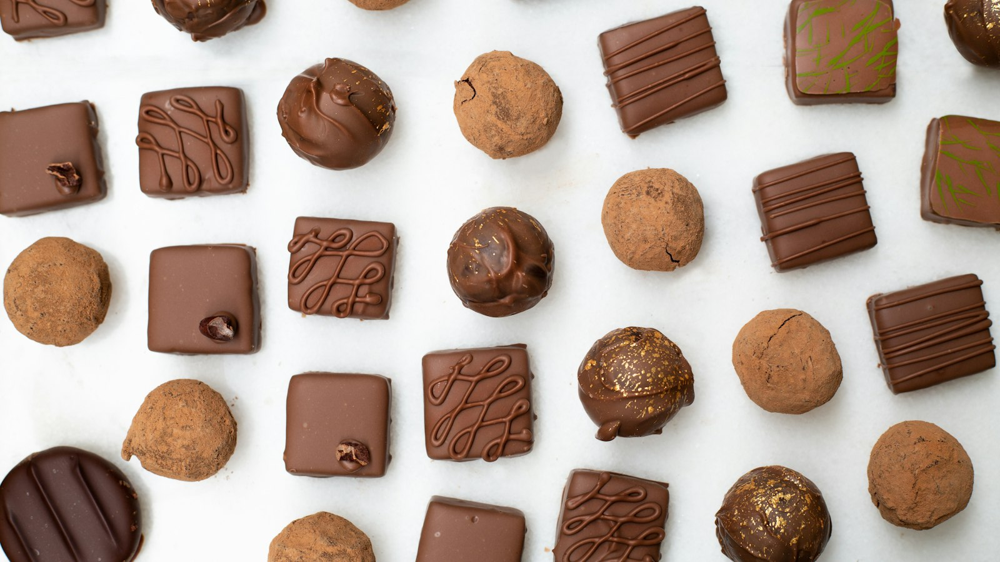

Cikk · Kreatin
Kreatin: rövid, intenzív szakaszok, nem a hosszútáv
A kreatin az izomban van, és energiát ad. A sportorvosok a rövid, intenzív ismétlésekre látnak hasznot, az állóképességre nem.

Mi a készítmény vagy a téma?
A kreatin vegyület, az izmokban raktározódik, és energiát ad nekik. A szervezet naponta körülbelül 1 grammot készít, és állati ételből, például marhából és lazacból is származik. A NIH szerint csak a készítményből bevitt, ennél jóval nagyobb mennyiség javíthat bizonyos teljesítményt.
Kinek szól?
Egészséges felnőtt sportolónak és edző embernek szóló kérdés a NIH edzéslapján. Nem szív- vagy vesebetegség kezelése. A kreatin általában súlynövekedéssel jár, mert vizet tart vissza.
Mit mond a kutatás?
A NIH szerint a kreatin növelheti az erőt, a teljesítményt és a maximális izom-összehúzódás képességét, de a mérték egyénenként eltér. Az ismételt, rövid, intenzív szakaszokban, körülbelül 2,5 percig, például sprint és súlyemelés, javítja a teljesítményt. Állóképességi sportban, távfutásban, kerékpárban, úszásban kevés a haszna. Egészséges felnőttnél néhány hétig vagy hónapig biztonságosnak írják, több éven át is annak tűnik.
Egy metaanalízis szerint az ellenállásos edzéssel együtt a kreatin kismértékben növelte a közvetlenül mért izomvastagságot a felső és az alsó testen is, placebóval és edzéssel szemben.
Jól alátámasztott A NIH szerint a kreatin az ismételt, rövid, intenzív erőkifejtés teljesítményét javíthatja. Állóképességi sportban kevés a haszna. Forrás: https://ods.od.nih.gov/factsheets/ExerciseAndAthleticPerformance-Consumer/
Korlátozott Ellenállásos edzéssel együtt a kreatin kismértékű izomvastagság-növekedéssel járt egy képalkotó metaanalízisben. A hatás kicsi. Forrás: https://pubmed.ncbi.nlm.nih.gov/37432300/
Mit nem állítunk
Nem állítjuk, hogy a kreatin mindenkinél ugyanannyit erősít.
Nem mondunk betöltő adagot. A vizsgálati mennyiségek nem rendelvények.
A vízvisszatartás miatti súlynövekedés nem izom önmagában.
Források
- NIH ODS. Exercise and athletic performance, Consumer. Kreatin. https://ods.od.nih.gov/factsheets/ExerciseAndAthleticPerformance-Consumer/
- Burke R és mtsai. Creatine and regional hypertrophy. PMID 37432300. https://pubmed.ncbi.nlm.nih.gov/37432300/